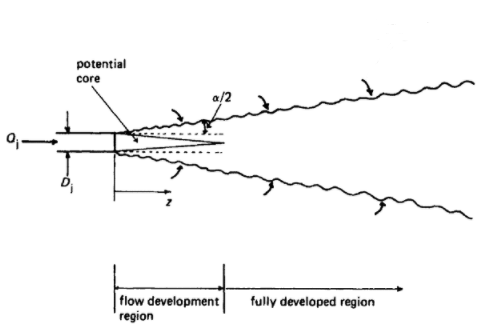
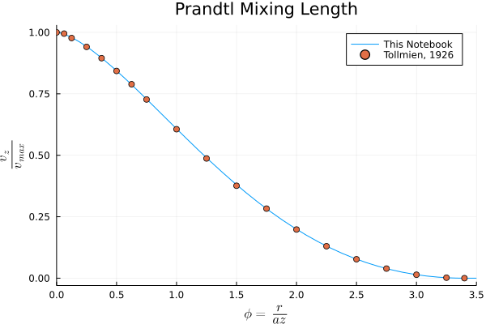
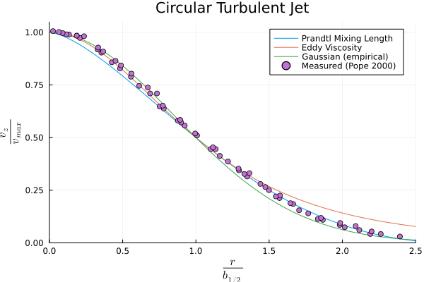
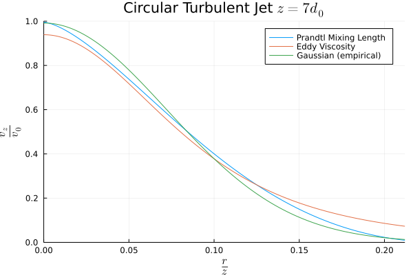

In a previous post I worked through a chemical release modeled as a turbulent jet and while I mentioned there were several ways modeling the jet, I didn’t go into any of them. I’m taking the opportunity here to collect my notes on turbulent jets, some different ways of modeling the jets, and the relative performance of each approach.
Observations on Turbulent Jets
We are considering a submerged circular jet, issuing from a surface, with the coordinate system centered on the jet. Since it is circular, the natural coordinate system is cylindrical with a downstream distance z, radial distance r, and angular coordinate θ. The jet is fully turbulent when the Reynolds number, \(Re \gt 2000\), where the Reynolds number is calculated with respect to the initial jet velocity and jet diameter
\[ Re = { \rho_j v_0 d_0 \over \mu_j } \]
We are also considering the case where the densities of the two fluids are similar, where we take “similar” to mean \[ \frac{1}{4} \le { \rho_{a} \over \rho_{j} } \le 4 \]
Where subscript a indicates the ambient fluid and j the jet. For much the experimental data the jet and ambient fluid are the same fluid, e.g. a jet of air into air or water into water.
Turbulent jets expand by entraining ambient fluid, tracing out a cone defined by a jet angle \(\alpha \approx 15-25^\circ\). The mixing layer penetrates into the jet forming the potential core, inside is pure jet material and outside is mixed. After approximately 6 diameters the region is fully developed.

Figure 1: A turbulent jet emitted from a circular orifice.
Empirical approximations of the velocity profile are often given with respect to this jet angle or, equivalently, the slope of the line (i.e. \(\tan \frac{\alpha}{2}\)). A related way of parameterizing the jet is in terms of a width parameter b. Typically this is the width of the velocity profile at half-height \(b_{1/2}\) (though not always). With a constant jet angle and a self-similar velocity profile the width is directly proportional to the downstream distance \(b_{1/2} = \tan \left( \frac{\alpha_{1/2} }{2} \right) z = c z\).
Where the value of c is can be found in the literature
At this point it is common to introduce a variable \(\xi = {r \over b_{1/2} }\) or \(\xi = {r \over z }\) where we are taking advantage of the fact that \(b_{1/2} \propto z\). This is a scaled radial distance, using the width at half-height as a characteristic length. It is important to keep track of which definition of ξ is being used as they differ by a scaling factor. The reason for this change of variables is the observation that the shape of the velocity profile is the same at any downstream point, it is merely scaled down in height and wider as one travels downstream. That is \({ \bar{v}_z \over \bar{v}_{max} } = f \left( \xi \right)\) is the same for all downstream distances (in the region where the jet is fully developed).
Another important observation is that the center-line velocity, the max velocity in the jet, decays with the inverse of the downstream distance, i.e.
\[ \bar{v}_{max} \propto z^{-1} \]
Putting those two observations together we expect the velocity profile to have the form
\[ \bar{v}_z = { \mathrm{const} \over z } f \left( \xi \right)\]
Modeling Turbulent Jets
To set up our system we consider the case of a jet coming out of a point on an infinite surface into a quiescent medium, and that the jet and medium have the same density. This is a major simplification, but it makes the math easier to deal with. The coordinate system is centered at this point and all momentum in the jet ultimately comes from the origin.
The boundary conditions for the problem are:
at the center-line, r=0, the velocity is entirely in the z-direction
at the center-line, r=0, the velocity in the z-direction is at a maximum
as the radius increases, r → ∞ , the velocity in the z-direction goes to zero
Time Averaged Values
Since we are concerned with turbulent flow, we can employ Reynolds decomposition to transform the velocities like so
\[ v_z = \bar{v}_z + v^{\prime}_{z} \]
\[ v_r = \bar{v}_r + v^{\prime}_{r} \]
where \(\bar{v}\) is the time-smoothed velocity and \(v^{\prime}\) is an instantaneous deviation such that \(\bar{v^{\prime} } = 0\) and the time-averaging operator follows the Reynolds criteria.
Equations of Motion
The equations of motion in terms of time-smoothed velocities are \[ \rho {D \mathbf{\bar{v} } \over D t } = - \nabla \bar{p} - \nabla \cdot \mathbf{ \bar{\tau} } + \rho \mathbf{g} \]
Where \(\mathbf{ \bar{\tau} }\) is the turbulent stress and includes the Reynolds stresses.
This definition ensures that the equation of continuity is satisfied. Suppose that \(\psi = k z F\left(\xi\right)\), where F is a unitless function of \(\xi = \frac{r}{z}\) and \(k\) is a constant with units \([[ \mathrm{length} ]]^2 \times [[ \mathrm{time} ]]^{-1}\), then
\[= -{k \over z} {F^{\prime} \over \xi} = { \mathrm{const} \over z } f \left( \xi \right)\]
Which matches what we expect from the empirical observations (which is why we supposed that form of the stream function in the first place). We can use this definition to work out some other useful terms
\[ \left( k \over z \right)^2 { d \over d \xi } \left( F F^{\prime} \over \xi \right) = {1 \over \rho} {\partial \over \partial r} \left( r \bar{\tau}_{rz} \right) \]
Which is suggestive of the overall approach to follow: find an expression for the right hand side of this differential equation, integrate both sides with respect to ξ, and solve for F(ξ)
Boundary Conditions
The initial boundary conditions of the problem were that:
\(\bar{v}_r = 0\) at r=0
\({\partial \bar{v}_z \over \partial r} = 0\) at r=0 (i.e. the velocity is at a maximum)
\(\bar{v}_z \to 0\) as r → ∞ (i.e. the velocity decays to zero)
In terms of F and ξ these become:
\({F \over \xi} - F^{\prime} = 0\) at ξ=0, which implies F=0 at ξ=0
\(F^{\prime \prime} - {F^{\prime} \over \xi} = 0\) at ξ=0
\({F^{\prime} \over \xi} \to 0\) as ξ → ∞
Momentum Balance
To determine the constant k we use a momentum balance: the momentum flux, J, in the z direction is constant. Initially the momentum flux is
Taking the integral to be I, and equating the initial momentum flux with the momentum flux at point z7
7 I’ve played a little fast and loose with the definition of \(\bar{v}_z\) in that I am implicitly assuming \(f(\xi) = {-F^{\prime}(\xi) \over \xi}\) which isn’t strictly true, there can be scaling factor. In practice all of these are collected together into one constant so it doesn’t matter, but that is something to be aware of as the definition of k here is really \(k\times \mathrm{const}\) where \(\mathrm{const} = {-F^{\prime}(\xi) \over \xi} \div f(\xi)\)
We suppose that the mixing length is proportional to the width of the velocity profile \(b_{1/2}\), the characteristic length for the velocity profile, which we know is proportional to the downstream distance z
\[ l \propto b_{1/2} \propto z\]
\[ l = c z \]
Where \(c\) is some unitless constant. Making the observation that \({\partial \bar{v}_z \over \partial r} < 0\) we can make the simplification
Putting that together, the ODE can be integrated easily9
9 Because of how \(\bar{v}_z\) and \(\bar{v}_r\) were defined \(-{ F^{\prime} \over \phi } \ge 0\), i.e. \({ F^{\prime} \over \phi } \le 0\). For the signs to work out, \(F \le 0\) and \(F^{\prime} \le 0\) (since \(F F^{\prime} \ge 0\))
Figure 2: The numerical integration of F(φ), Prandtl mixing length theory.
Using the solution in terms of φ we can write a function f(ξ)
functionf_pml(ξ; a=0.066) ϕ =abs(ξ)/aif ϕ >0 F, F′ =sol(ϕ) f =-F′/ϕ f =max(f, 0)else f =1endreturn fend
Comparison with Tollmien
The classic treatment of the Prandtl mixing length model is from Tollmien10 in which, instead of solving numerically in the way shown above, the ODE is further transformed and a series expansion is used to generate a table of results. More often than not it is these tabulated values, or similar ones,11 that are presented as the solution to the model.
11Rajaratnam, Turbulent Jets, 39. The table has an error at φ=1: the value of \({F^{\prime} \over \phi }\) should be 0.606 but is given as 0.505 (presumably a typo).
We can easily compare the result here with the tabulated values and verify for ourselves that we have indeed solved the right differential equation. Though by solving numerically in this way we can control the level of precision and easily generate smooth interpolations. In my opinion, this makes using the ODE solution far more convenient than the tabulated values.

Figure 3: This solution versus the tabulated results of Tollmien, demonstrating that this is the correct solution but by a different means.
Width at Half Height
The width at half height, \(b_{1/2}\), is an important parameter and often velocity profiles are scaled relative to this. To compare different models on a fair basis, it is a good idea to determine what the model parameters are relative to \(b_{1/2}\). Then each model can be scaled to the same \(b_{1/2}\) and compared, apples-to-apples.
In this case we don’t have a closed form for the velocity profile so we need to solve for φ such that f(φ)=0 numerically.
and the result of this notebook compares with those
Velocity Profile
Now that we have completed the integration we can calculate the parameter k, using the equation derived from the momentum balance
\[ k = \sqrt{1 \over 8 I } v_0 d_0 \]
with the value of the integral coming directly from the ode solver
usingNumericalIntegration: integrateϕ, F′ = sol.t, sol[2,:]# trim any unphysical valuesF′[F′.>0] .=0.0functionintegrand(ϕ, F′)if ϕ>0return F′^2/ϕelsereturn0endendI =integrate(ϕ, integrand.(ϕ, F′))I = a^2* I
0.002573069044757039
Allowing us to write the velocity profile as
\[ \bar{v}_z = 6.97 { v_0 d_0 \over z} f(\xi) \]
Eddy Viscosity
The eddy viscosity model makes the assumption that the turbulent shear stress depends on the rate of strain in a manner that is analogous to laminar flow, with the constant of proportionality being the eddy viscosity ε:
Recall that the equation of motion in the z direction is (in terms of the unitless function F)
\[ \left( k \over z \right)^2 { d \over d \xi } \left( F F^{\prime} \over \xi \right) = {1 \over \rho} {\partial \over \partial r} \left( r \bar{\tau}_{rz} \right) \]
Substituting the expression for \(\bar{\tau}_{rz}\) we have
\[ \left( k \over z \right)^2 { d \over d \xi } \left( F F^{\prime} \over \xi \right) = - \varepsilon {\partial \over \partial r} \left( r \left( \partial \bar{v}_{z} \over \partial r \right) \right) \]
\[ \left( k \over z \right)^2 { d \over d \xi } \left( F F^{\prime} \over \xi \right) = - \varepsilon \left( \left( \partial \bar{v}_{rz} \over \partial r \right) + r \left( \partial^2 \bar{v}_{rz} \over \partial r^2 \right) \right) \]
Substituting in the expressions for \({\partial \bar{v}_z \over \partial r}\) and \({\partial^2 \bar{v}_z \over \partial r^2}\) we arrive at
\[ \left( k \over z \right)^2 { d \over d \xi } \left( F F^{\prime} \over \xi \right) = { k \varepsilon \over z^2} \left( F^{\prime \prime \prime} - { F^{\prime \prime} \over \xi } + { F^{\prime} \over \xi^2 } \right) \]
\[ \left( k \over z \right)^2 { d \over d \xi } \left( F F^{\prime} \over \xi \right) = { k \varepsilon \over z^2} { d \over d \xi } \left( F^{\prime \prime} - { F^{\prime} \over \xi } \right) \]
at this point we note that k and ε have the same units of \([[ \mathrm{length} ]]^2 \times [[ \mathrm{time} ]]^{-1}\) and are independent of z and ξ, so we propose that \(\varepsilon = c k\) where c is some unknown constant of proportionality.
\[ \left( k \over z \right)^2 { d \over d \xi } \left( F F^{\prime} \over \xi \right) = c \left( k \over z \right)^2 { d \over d \xi } \left( F^{\prime \prime} - { F^{\prime} \over \xi } \right) \]
\[ { d \over d \xi } \left( F F^{\prime} \over \xi \right) = c { d \over d \xi } \left( F^{\prime \prime} - { F^{\prime} \over \xi } \right) \]
Since we have a convenient closed form for the velocity profile, we can calculate what the parameter \(C_2\) is in terms of the width at half height rather easily.
Perhaps the most widely used turbulent jet model is simply an empirical gaussian fit to the data. These are easy to use – no solving of ODEs required – and fitting them to data is relatively straight forward. There is no real theoretical basis that I am aware of, merely based on the observation that a gaussian function fits the velocity profile well.
Where c is a parameter determined by fitting to a dataset.
f_emp(ξ; c=72) =exp(-c*ξ^2)
Width at Half Height
Since we have a convenient closed form for the velocity profile, we can calculate what the parameter \(c\) is in terms of the width at half height rather easily
At this point two models of velocity were derived using different models of the free turbulent stress and one purely empirical model was introduced. Each of these models uses a different set of parameters, and have different strengths and weaknesses in terms of usability. To compare them like-for-like we can scale each to the same width at half height, which is shown below along with some measured data14
We can also calculate a Mean Square Error (MSE) and evaluate which model is a better fit to the observed velocity profile.

Figure 4: Comparing all three turbulent jet models to the observed velocity profile.
Prandtl Mixing Length Model MSE 0.00051
Eddy Viscosity Model MSE 0.00092
Gaussian (empirical) Model MSE 0.00054
Interestingly the Prandtl mixing length model works the best, though the gaussian fit is close enough as to be essentially the same given this data set. Which is convenient as a gaussian fit is easier to work with. The eddy viscosity model is the easiest to derive, however it clearly does not work as well for the outer parts of the jet.
The above approach, the one you will most likely see in the literature, compares each model scaled to the same height and width. Which is sensible if one is planning on fitting data, and allowing that the height and width to be free parameters. However we know, from the analysis above, that the height of each model is dependent upon the width, so might be instructive to look at how that plays out in practice.
Suppose we are looking at a velocity profile far enough downstream to be in the fully developed flow, say \(z = 7 d_0\)

Figure 5: A comparison of the three turbulent jet models with an identical half-width, with the height calculated from the momentum balance.
Note that in the region near the center-line the three models are no longer particularly close to one another and the eddy viscosity and prandtl mixing length models have changed places. Relative to the predicted \(v_{max}\) the the eddy viscosity model stays high when compared to the prandtl mixing length model, however the eddy viscosity model predicts a lower \(v_{max}\) such that the effect is entirely reversed.
It’s also worth noting that the gaussian fit and the prandtl mixing length model track one another reasonably well. I have seen a gaussian fit of the Tollmien tabulated results used in some papers when a smooth interpolation of the intermediate values is required and this suggests that may not be a bad idea. Though, to me, just solving the ode is easier. On a modern machine it takes milliseconds or less and a good ode package like DifferentialEquations.jl provides a higher-order interpolation for free.
This comparison has been done with each of the model parameters set based on a shared width. However there are as many different ways of arriving at the model parameters as there are datasets to fit against. There is a wide spread in tabulated values in the literature and so the predictions of two independently arrived at models can be quite different due all of these factors coming together.
Where to go from here
All of this work was to determine the velocity field, which is not necessarily what anyone cares about. In a release scenario, for example, it is concentration that is most relevant. For a heat transfer application, perhaps, you may care about the temperature field instead. However, with the velocity field the concentrations, temperatures, total entrained flow, etc. can be easily derived.
References
Bird, R. Byron, Warren E. Stewart, and Edwin N. Lightfoot. Transport Phenomena. 2nd ed. Hoboken, NJ: John Wiley & Sons, 2007.
Garde, R. J. Turbulent Flows. 3rd ed. London: New Academic Science, 2010.
Pope, Stephen B. Turbulent Flows. Cambridge: Cambridge University Press, 2000.
Rajaratnam, N. Turbulent Jets. Amsterdam: Elsevier, 1974.
Tollmien, Walter. “Berechnung Turbulenter Ausbreitungsvorgänge.”Zeitschrift Für Angewandte Mathematik Und Mechanik 6 (1926): 468–78. https://doi.org/10.1002/zamm.19260060604